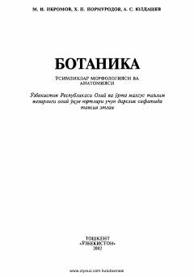

BOOliy oʻquv yurtlari uchun oʻsimliklar morfologiyasi va anatomiyasi boʻyicha darslik.
Ushbu darslik oliy oʻquv yurtlari talabalari uchun moʻljallangan boʻlib, oʻsimliklar morfologiyasi va anatomiyasi asoslarini qamrab oladi. Kitobda oʻsimliklar hujayraviy tuzilishi, koʻpayishi, vegetativ organlar va ularning biologik ahamiyati kabi mavzular ilmiy asosda yoritilgan.